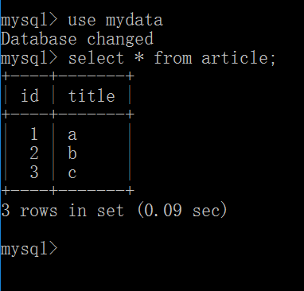

本篇介绍的是关于Cookie，Session,Application和Java Bean的一些原理和使用方法。
第十三课 Cookie_1
HTTP是无状态的
有状态：Server知道Client以前在我这儿做过什么事儿
处理Cookie
- Http协议的无连接性要求出现一种保存C/S间状态的机制
- Cookie：保存到客户端的一个文本文件，与特定客户相关
- Cookie以“名-值”对的形式保存数据
- 创建Cookie：new Cookie(name,value)
- 可以使用Cookie 的setXXX方法来设定一些相应的值
- setName(String name)/getName()
- setValue(String value)/getValue()
- setMaxAge(int age)/getMaxAge()
- 利用HttpServletResponse的addCookie(Cookie)方法将它设置到客户端
- 利用HttpServletRequest的getCookies()方法来读取客户端的所有Cookie，返回一个Cookie数组
- 设置Cookie
- SetCookies.java
- 读取Cookie
- ShowCookies.java
1:服务器可以向客户端写内容
2:只能是文本内容
3:客户端可以阻止服务器写入
4:只能拿自己webapp写入的东西
5:Cookie分为两种
属于窗口/子窗口（放在内存中的）
属于文本(有生命周期的）
6:一个servlet/jsp设置的cookies能够被同一个路径下面或者子路径下面的
servlet/jsp读到 (路径 = URL)
(路径 != 真实文件路径)
第十四课 Cookie_2
SetCookies.java：
|
|
ShowCookies.java
|
|
访问设置cookie的页面：
点击超链接，显示出现在的cookie：
然后我们到浏览器查看cookie，发现这六个cookie都是存在的：
第十五课 Cookie_3
做一个实验，将浏览器中cookie清理干净，将web.xml中的<url-pattern>/servlet/ShowCookies</url-pattern>
改为：<url-pattern>/ ShowCookies</url-pattern>
tomcat重新reload之后，先访问
http://127.0.0.1:8888/test/servlet/SetCookies
再访问
http://127.0.0.1:8888/test/ShowCookies
发现页面中没有任何cookie被显示出来
再做第二个实验：
将浏览器中cookie清理干净，将web.xml中的<url-pattern>/ ShowCookies</url-pattern>
改回<url-pattern>/servlet/ShowCookies</url-pattern>
将<url-pattern>/servlet /SetCookies</url-pattern>
改为<url-pattern>/SetCookies</url-pattern>
等tomcat重新reload之后，先访问
http://127.0.0.1:8888/test/SetCookies
再访问：
http://127.0.0.1:8888/test/servlet/ShowCookies
发现六个cookie都被显示出来。
结论：
一个servlet/jsp设置的cookies能够被
同一个路径下面或者子路径下面的
servlet/jsp读到 (路径 = URL)
(路径 != 真实文件路径)
第十六课. Session_1
Session：在某段时间一连串客户端与服务器端的“交易”
一、
我们通过程序SessionInfoServlet.java来演示Session：
|
|
配置web.xml文件：
运行
http://127.0.0.1:8888/test/servlet/SessionInfoServlet
得到
再运行：
http://127.0.0.1:8888/test/servlet/ShowCookies
可以看到：
发现和上面的Session ID是相同的。
结论：如果浏览器支持Cookie, 创建Session的时候会把SessionID保存在Cookie里
二、
设置浏览器，阻止存取cookie
运行
http://127.0.0.1:8888/test/servlet/SessionInfoServlet
发现每次刷新后，Session ID都在变化，因为cookie没有存取。
第十七课. Session_2
上面就是因为把cookie禁掉以后产生的Session ID变化效果，那怎么样解决这个问题呢？
如果不支持Cookie, 必须自己编程使用URL重写的方式实现Session，用到的方法是：
response.encodeURL()
1.转码
2.URL后面加上SessionID
代码实现就是在上面的SessionInfoServlet.java中进行修改，就是将
改为：
|
|
这样在每次浏览器进行刷新的时候，URL后面都会跟上一串固定的SessionID:
第十八课. Session_3
tomcat目录下的conf目录有一个web.xml，可以在里面对session过期时间进行设置，可以看到我们这里的过期时间是30分钟
管理Session的一些常用方法：
- getRequestedSessionId()：返回随客户端请求到来的会话ID。可能与当前的会话ID相同，也可能不同。
- getSession(boolean isNew)：如果会话已经存在，则返回一个HttpSession，如果不存在并且isNew为true，则会新建一个HttpSession
- isRequestedSessionIdFromCookie()：当前的Session ID如果是从Cookie获得，为true
- isRequestedSessionIdFromURL():当前Session ID如果是由URL获得，为true
- isRequestedSessionIdValid()：如果客户端的会话ID代表的是有效会话，则返回true。否则（比如，会话过期或根本不存在），返回false
第十九课. Session_4
跟踪Session代码：
|
|
- HttpSession的常用方法
- getAttributeNames()/getAttribute()
- getCreateTime()
- getId()
- getMaxInactiveInterval()
- invalidate()
- isNew()
- setAttribute()
- setMaxInactivateInterval()
Session不像Cookie拥有路径访问的问题
- 同一个application下的servlet/jsp可以共享同一个session，前提是同一个客户端窗口
证明这个结论，做实验：
修改web.xml，将<url-pattern>/servlet/ShowSession</url-pattern>
改为：<url-pattern>/ShowSession</url-pattern>
然后访问：
http://127.0.0.1:8888/test/servlet/SessionInfoServlet
得到页面：
再访问：
http://127.0.0.1:8888/test/ShowSession
显示页面：
发现和前面的Session ID是相同的，证明了Session不存在路径问题。
第二十课. Application
Session是针对于一个客户端的特定的内存区域，而application是针对所有客户端都可以访问的内存区域
每个web application的运行环境，称作一个context(上下文), servlet context是servlet运行时的上下文环境，也就是当前运行的整个webapp，比如我们之前写的webapp/test。
测试Application的代码：
|
|
修改对应配置，访问：
http://127.0.0.1:8888/test/TestServletContext
发现当前页码显示0
现在关闭这个浏览器，换一个浏览器，再访问相同网址，发现页面显示的访问次数加了1，说明application是整个web app所共享的，有点类似于静态变量。
总结一下application：
- 用于保存整个WebApplication的生命周期内都可以访问的数据
- 在API中表现为ServletContext
- 通过HttpServlet的getServletContext方法可以拿到
- 通过ServletContext的 get / setAttribute方法取得/设置相关属性
- TestServletContext.java
Servlet类本身位于包中，例如：
com.bjsxt.servlet.HelloWorldServlet，我们需要在classes将这个.class的完整目录创建出来：
对应的配置文件中需要改为：
第二十一课. 数据库处理
数据库处理以及在Servlet中使用Bean
- 广义javabean = 普通java类
- 狭义javabean = 符合Sun JavaBean标准的类
- 在Servlet中使用Bean和在通常程序中使用Bean类似
- 属性名称第一个字母必须小写，一般private，
比如：private productId - 一般具有getters and setters
- 要具有一个参数为空的构造方法
- 但Bean不应具有GUI表现
- 一般是用来实现某一业务逻辑或取得特定结果
- 属性名称第一个字母必须小写，一般private，
- 示例:
- 连接数据库
– ShowRs.java
– ShowRsUseBean.java
- 连接数据库
首先我们来看一下连接Servlet数据库的操作，ShowRs.java代码如下：
将这个文件的.class拷贝到classes目录下，在web.xml进行配置，访问：
http://127.0.0.1:8888/test/servlet/ShowRs
发现里面没有任何数据显示。
这时怀疑是不是数据库没有数据，于是执行命令行操作：mysql -u root -p
进行mysql，输入我们的密码，执行use mydata
切换到我们的数据库，
进行查询操作：select * from article;
发现显示里有数据：

这时我们再查看tomcat后台，发现报错：
这时考虑要不要把mysql的连接驱动jar包导入到项目，思考后发现不可以，因为我们的servlet运行在tomcat上，所以我们的解决办法就是在WEB-INF下创建一个lib目录，然后把我们的connector驱动jar包放到lib目录下：
重启tomcat，再次访问
http://127.0.0.1:8888/test/servlet/ShowRs
发现Servlet成功将数据库中的数据取出来并显示在前端页面上：
大功告成！
第二十三课. UseBean
DB.java：
ShowRsUseBean.java：
将这两个java文件生成的.class复制到tomcat的classes目录下，然后进行配置部署，访问地址：
http://127.0.0.1:8888/test/servlet/ShowRsUseBean
就可以成功读取数据库的内容并显示在前端页面了：